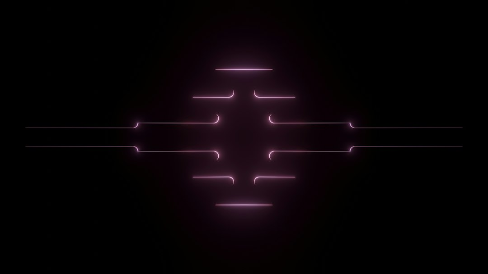

Come Evitare i 3 Errori Critici in Viaggi di Gruppo e Sicurezza Outdoor con AURA Proximity

I 3 errori più gravi commessi da motociclisti, camperisti e guide outdoor in sicurezza e comunicazione: come evitare incidenti e ritardi nei soccorsi con AURA Proximity
- I viaggi in colonna senza sistemi di prossimità affidabili espongono a disorientamento e pericoli.
- La mancanza di rete 4G su sentieri e zone isolate compromette interventi tempestivi in caso di cadute o infortuni.
- AURA Proximity offre una tecnologia mesh P2P 100% web senza app, con radar tattico e allarmi vocali per garantire sicurezza operativa e comunicazione.
Analisi approfondita della problematica nel settore outdoor e della sicurezza in viaggi di gruppo
Professionisti e appassionati che operano in ambienti dinamici e a rischio come motociclisti, camperisti, atleti outdoor, responsabili della sicurezza nei cantieri e guide naturalistiche si trovano quotidianamente a fronteggiare sfide cruciali nella gestione della sicurezza e della comunicazione. La crescente complessità di spostamenti in colonna, la natura isolata dei percorsi e l'affidamento a tecnologie di comunicazione tradizionali mettono a rischio non solo l’efficacia della missione ma anche la vita stessa delle persone coinvolte.
Nonostante la presenza di dispositivi mobili e app dedicate, persistono gap operativi derivanti dalla mancanza di copertura cellulare, interferenze ambientali e difficoltà tecniche nell’uso di strumenti complessi. Questi limiti provocano spesso ritardi nei soccorsi e disorientamento, con conseguenze gravi soprattutto in situazioni di emergenza.
Le conseguenze e costi di non adottare soluzioni innovative: rischi e inefficienze sistemiche
Il problema si aggrava quando in un viaggio in colonna, che sia motociclistico o automobilistico, si perde la traccia di un partecipante, o peggio, si verifica una caduta con infortunio in zona senza copertura 4G. In tali condizioni i soccorsi non solo subiscono ritardi rilevanti, ma le possibilità di un esito positivo diminuiscono drasticamente.
Per un lavoratore isolato in cantiere o un atleta in sentieri poco battuti, l’assenza di sistemi affidabili di comunicazione e di allerta Man-Down può tradursi in ore di isolamento senza assistenza. Oltre al fattore umano, ciò comporta aumenti dei costi assicurativi, responsabilità legali per i datori di lavoro (in ottica D.Lgs 81/08) e danni reputazionali delle aziende coinvolte.
Ulteriori conseguenze includono inefficienze operative dovute a perdita di tempo, comunicazioni incoerenti e necessità di interventi manuali con maggiore impiego di risorse per ricostruire la situazione e garantire la sicurezza.
Come AURA Proximity di RM Studio risolve efficacemente il problema: innovazione tecnologica al servizio della sicurezza e comunicazione
AURA Proximity si propone come una soluzione SaaS avanzata e nativamente integrata per la gestione della sicurezza personale e di gruppo in ambiti outdoor e operativi critici. La tecnologia si basa su un radar di prossimità tattico e una chat decentralizzata Mesh P2P 100% Web, che elimina la necessità di scaricare app complicate e riduce dipendenze da reti cellulari.
Attraverso un browser semplice e immediato, AURA Proximity permette il controllo visivo costante della posizione in colonna o del gruppo, con notifiche istantanee e allarmi intelligenti in caso di impatti o cadute (funzione Man-Down oltre 3G). L’integrazione con WhatsApp per invio SOS e la bussola direzionale 3D consentono un orientamento efficace anche nei sentieri più impervi o in assenza di segnale 4G.
Il Co-Pilota Vocale a mani libere permette di mantenere la concentrazione sulla guida o attività senza distrazioni, accrescendo così la sicurezza complessiva. Il sistema è progettato con un’interfaccia tattica futuristica, adatta a scenari complessi e contestualizzati outdoor, garantendo un’esperienza utente fluida e pronta all’uso in qualsiasi momento.
| Gestione Tradizionale | Con AURA Proximity |
|---|---|
| Affidamento a smartphone con app installate, spesso non funzionanti senza 4G | Browser Web 100%, nessuna app da installare, funziona in mesh e offline parziale |
| Nessun sistema di prossimità tattico, difficoltà a mantenere la formazione in colonna | Radar di prossimità tattico integrato con segnalazioni visive e sonore |
| Allerta emergenza manuale o assente, senza automazione Man-Down | Rilevamento automatico cadute/impatti (>3G) con invio SOS WhatsApp integrato |
| Orientamento limitato in condizioni di scarsa visibilità o assenza di rete | Bussola direzionale 3D per orientamento preciso e Co-Pilota vocale a mani libere |
| Comunicazioni spesso intermittenti e difficili da gestire in emergenza | Chat Mesh P2P stabile, sicura, senza dipendenza da rete cellulare |
💡 Ti è stato utile questo approfondimento?
Condividilo con un collega o un amico del settore Motociclisti, Camperisti, Atleti, Responsabili Sicurezza Cantieri (D.Lgs 81/08) e Guide Outdoor a cui potrebbe interessare!
FAQ: Le domande più frequenti su sicurezza e AURA Proximity
1. AURA Proximity funziona senza rete 4G o Wi-Fi?
Sì, grazie alla tecnologia Mesh P2P 100% Web permette comunicazioni dirette tra i dispositivi in assenza di copertura cellulare.
2. Serve scaricare un'app dedicata?
No, il sistema si utilizza direttamente via browser, eliminando problemi di installazione e aggiornamenti.
3. Come viene garantita la privacy e la sicurezza dei dati?
I dati di posizione e comunicazione sono criptati e gestiti in modo decentralizzato per salvaguardare l’integrità e la riservatezza.
Inizia Subito
Pass Viaggio Singolo a €4.90 o Piano Pro a €19/mese. Nessuna app da installare.
Fonti Ufficiali e Risorse Esterne
Scopri l'Intelligenza Artificiale per la tua attività
Ottimizza i processi e aumenta le vendite con le soluzioni B2B di RM Studio.
Scopri AURA Proximity